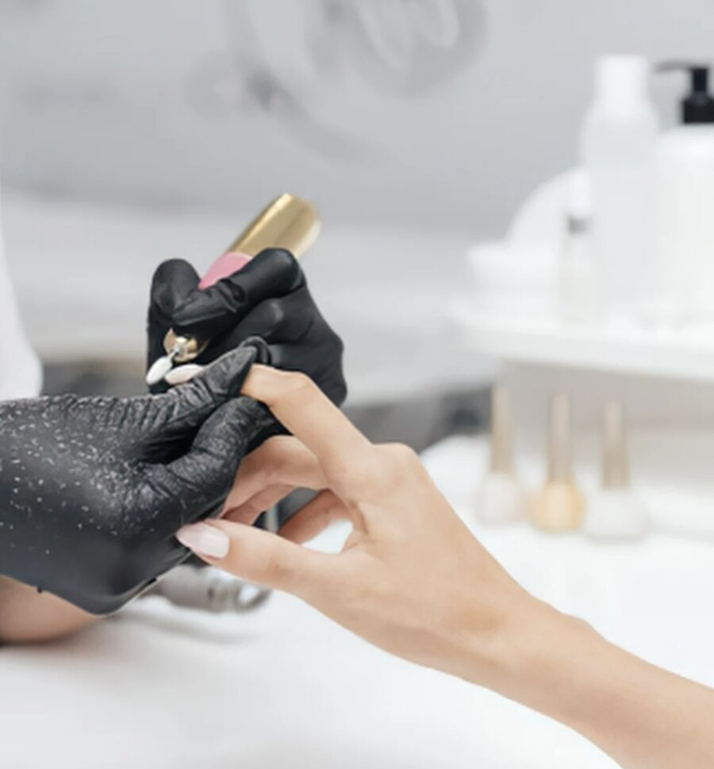
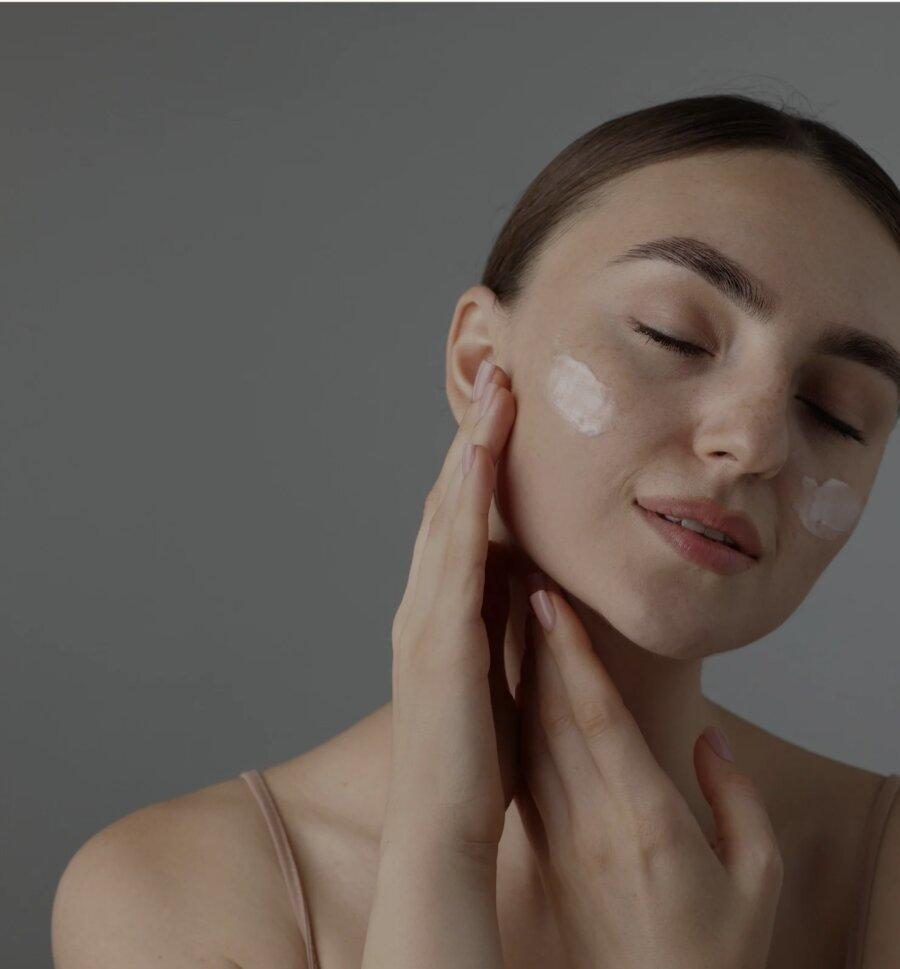
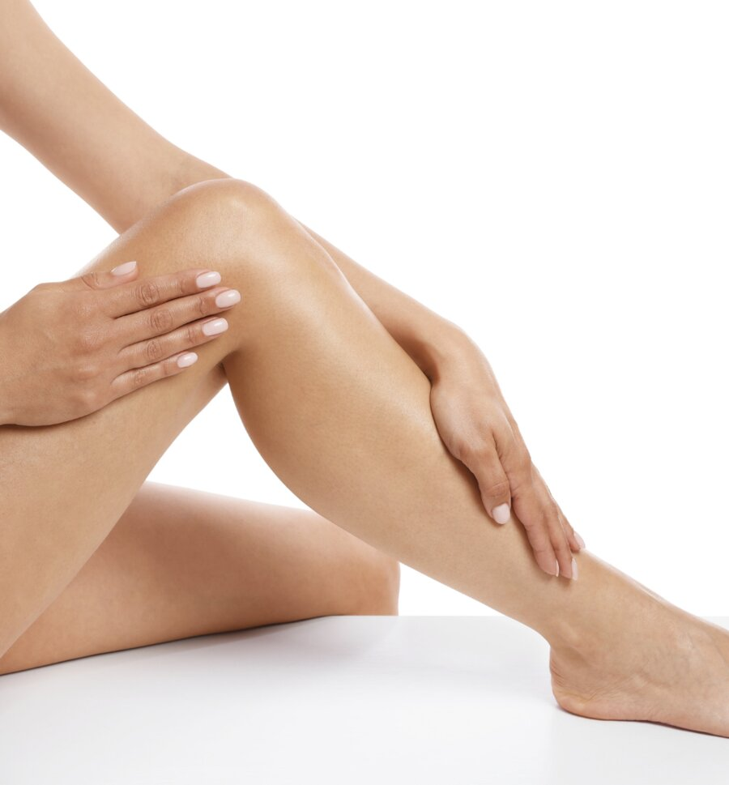

Onglerie
Onglerie & Nail Art
Beauté des mains et des pieds : manucure, pose gel, semi-permanent et nail art sur-mesure.
DécouvrirInstitut de beauté à Saint-Zacharie depuis 2011 — un havre de paix dédié à votre bien-être et à votre éclat naturel.
Réserver ma séanceDès que vous franchissez la porte, vous le sentez — quelque chose ici invite à souffler. La lumière naturelle, les teintes douces, le silence apaisé… Tout a été pensé pour que vous vous sentiez bien avant même le début du soin.
Michelle a imaginé chaque détail de son espace : des matières chaleureuses, des plantes vivantes, une décoration raffinée et bienveillante. Ce n'est pas un simple salon — c'est votre refuge, votre moment rien qu'à vous.

Beauté des mains et des pieds : manucure, pose gel, semi-permanent et nail art sur-mesure.
Découvrir
Soin visage homme/femme, modelages, gommages, vaporisation et relaxations sur-mesure.
Découvrir
Cire jetable, lumière pulsée, électrolyse et dispositif de photo rajeunissement.
DécouvrirMaquillage jour, soir, mariée, coloration cils et sourcils, mascara semi-permanent.
DécouvrirSoins du visage, épilations et prestations adaptés à la peau masculine.
DécouvrirMicroblading, microshading, dermopigmentation sourcils, lèvres et eyeliner.
DécouvrirParce que certains moments méritent d'être immortalisés, Michelle crée un maquillage sur-mesure qui dure, qui sublime et qui vous ressemble — de la première à la dernière photo. Mariage, soirée, shooting ou rendez-vous galant : une prestation pensée dans les moindres détails pour que vous soyez parfaite.
Grain de Douceur sélectionne les meilleures marques professionnelles pour vous garantir qualité et résultats — disponibles à la vente directement à l'institut.
"Michelle est incroyablement douée et attentionnée. Mes ongles sont exactement comme je les voulais — soignés et naturels, mais qui font quand même la différence. Je me suis sentie super à l’aise dès la première séance."
"J’avais un peu peur d’essayer les extensions de cils pour la première fois, mais Michelle a pris le temps de tout m’expliquer. Le résultat est magnifique et la tenue vraiment au top !"
"Les soins du visage ont complètement changé mon éclat — j’aurais dû essayer bien plus tôt. Michelle est professionnelle, précise et vraiment à l’écoute. Je reviens dès que possible !"
Un rendez-vous personnalisé vous attend dans l’institut Grain de Douceur, à Saint-Zacharie.